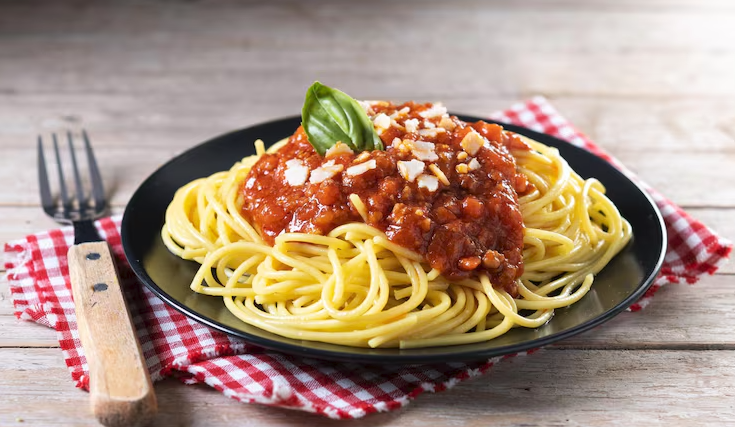

Home Page
Spaghetti

Description
That spaghrtti recipe contains homemade spaghetti sauce, a lot of herbs and creamy motzarella chese.
It's easy to make. It will take approx. 50mins of your time.
Ingredients
- 2 cans of chopped tomatoes
- 1 500ml jar of tomatoe paste with herbs or garlic
- spaghetti noodles
- 500grams of Ground beef meat
- 2 medium sized onions
- basil, oregano, garlic, sweet pepper, salt, pepper, and herbs of your choice
- olive oil
- motzarella chese
Directions
- chopp your onions and fry them on olive oil till golden brown
- add your meat, use salt and pepper and sweet red pepper and fry till all water disappears
- add your 2 cans and jar of chopped tomatoes and paste and wait regularry stiring till boiling
- add salt and herbs (more herbs = better taste)
- meanwhile boil your pasta
- add your pasta on plate and cover it with sauce
- Sprinkle with chese
- Enjoy!